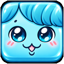
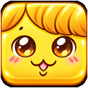
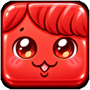

PRODUCT 001
COLOR BLOCKS DX
MIND PLAY EDITION
考える楽しさを、いつまでも。色を見て、次の配置を考え、指先で動かす。世代を問わず楽しめるスマートフォン向けブロックパズルです。
ORIGINAL BLOCK ART
ゲーム内で使用している5色のブロックは、COLOR BLOCKS DX用のオリジナルデザインです。サイト上の紹介画像も実際のゲーム素材に統一しました。



CONCEPT
ブロックをただ並べるだけではなく、1つの落下ピースの中に複数色が混ざることで、盤面の色配置を考えながらつなげていくゲームです。同じ色が上下左右に4個以上つながると消えます。
COMBO
消去後にブロックが落下し、再び同色が4個以上つながると連鎖が発生します。2コンボ、3コンボと続くほどスコア倍率が上がります。
消去数 × 10 × コンボ数
RESCUE STAR
2コンボが成立すると、画面を横切る「お助けスター」が出現します。スターをタップすると最大3個までストックでき、使用すると盤面下6段を消去します。
CONTROLS
タップで回転、左右ドラッグで移動、下ドラッグで落下。AUTO DROPをONにすると、下方向の操作で着地点まで一気に落下します。
MIND PLAY / ACCESSIBILITY
年齢を問わず、遊びやすく。
COLOR BLOCKS DXは、一般のゲーム好きな方はもちろん、自分のペースで遊びたい方にも楽しんでもらえるゲームを目指します。認知症の予防・改善や医療的な効果を保証するものではありません。
次の開発候補は「RELAXモード」。ゆっくりした進行、見やすい表示、演出の軽減、操作しやすいボタンを検討しています。現在のゲームには未実装です。
WHY THIS PRODUCT EXISTS
COLOR BLOCKS DXは、SOFTAZIOの最初の公開プロダクトです。ゲームそのものだけでなく、GitHub Pagesでの公開、スマートフォン操作、Google Analyticsによる利用状況計測、更新運用まで含めて、小さなソフトウェアを世に出す一連の流れを検証しています。
DEVELOPMENT STATUS
現在はテストローンチ段階です。ゲーム本体は5.25 Stableを基準版として保全し、MIND PLAY EDITIONの方向性に沿って使いやすさを検証します。RELAXモードは別途実装・テストした後に公開します。